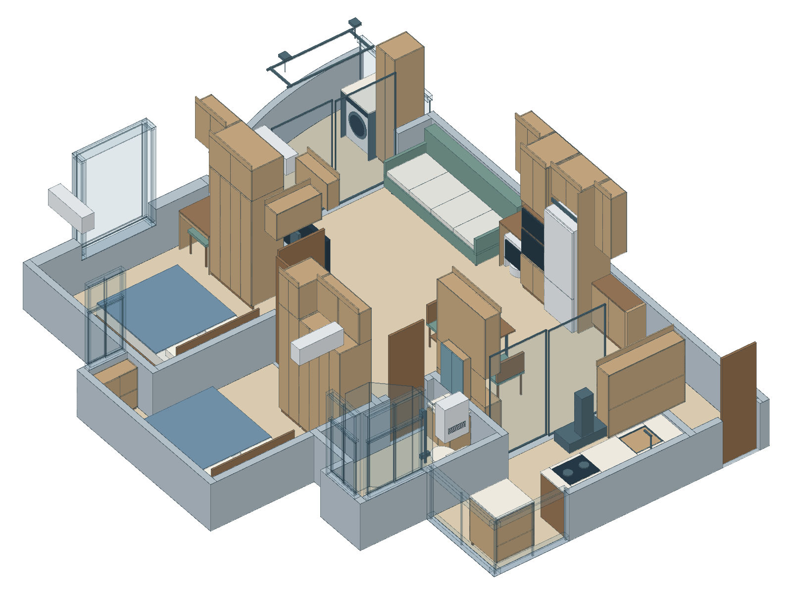

入口留空，设备退后
玄关不加落地深柜。入口端上柜由730缩至400，低柜维持350深，减少上半部压迫；仍可斜见阳台，不能等同完全遮挡视线。过门后主路按1100目标控制，实际户门净口另定。
双1500床 · 主方案A

桌面拖动旋转；手机先点“操作3D”，退出后恢复页面滚动。
参考模型尺寸；切换“平面”查看完整尺寸链。
玄关不加落地深柜。入口端上柜由730缩至400，低柜维持350深，减少上半部压迫；仍可斜见阳台，不能等同完全遮挡视线。过门后主路按1100目标控制，实际户门净口另定。
沙发外包2300×950毫米，四个座位净宽各550毫米。南端距机器人柜100毫米，北端距阳台门83毫米；四人并坐较紧凑，选型要核实实际净座宽。
两张床垫均为1500×2000。主卧两侧上下床；次卧单侧上下床，床尾402为窄颈。床下采用浅抽屉与低频上取分仓。
蒸烤取盘、机器人维护临时占用主路；衣柜与床侧抽屉分时操作。关闭态净距不直接沿用到开启状态。
次卧上柜给空调让位，净水器独立分柜，洗衣台独立支承，阳台高柜侧向固定在门边实墙。
卫生间按扫描地面约3.61㎡组织，包含约0.31㎡窗边凹位，窗台另按标高处理。盆柜改550×400并后退，淋浴靠干区切角460×460，马桶位置不动。单人500毫米投影可到洗面、坐便及开门后的湿区；不是无障碍或现场安装认证。
次卧挂机移到图下、朝厨房方向的墙，放在床侧通道上方。下衣柜1500完整保留，上柜改480宽深柜＋1020宽浅柜，浅柜用移门；留出空调前向维护空间。
右端700×700独立整衣台，洗衣机朝中央开门；门边450宽窄家政柜侧向开启。主要中央开口保留，不加洗衣池和整面吊柜。原洗衣位改低储物柜，床、灶、厕及客厅格局不随之改动。
洗衣装卸、低位晾晒分时使用。脱水声更接近客厅和主卧；已有给排水，排水系统用途、防雨及安全供电仍需按现场与机型落实。安全网不等于防雨封窗。
IKEA阳台洗衣组织：端部集中、晾晒设施收起后释放空间。Bosch安装说明：按型号接管、调平与试水。本方案不据此授权露天安装或改外立面。
采用传统形势偏好理解明敞、实体背靠与私密边界。落实为入口不逼窄、实墙床头、灶背稳定、厕门隔视、沙发有靠、主要窗面通透，不用于预测财富、婚姻或健康。
模型整套最大外包7850×10215毫米，包含墙体和异形边界。客厅主段净宽3466毫米，客餐厅和过道连通后的中段最宽4535毫米；它们是不同位置的宽度。模型地面约57.79平方米含主阳台，与房源建筑面积不是同一口径。
几何来自同户型参考模型。结构、完成面、门窗、原排污、燃气烟道、设备型号及外机条件落实后才能下单施工。剖切不表示拆墙，操作空间不计入储物。